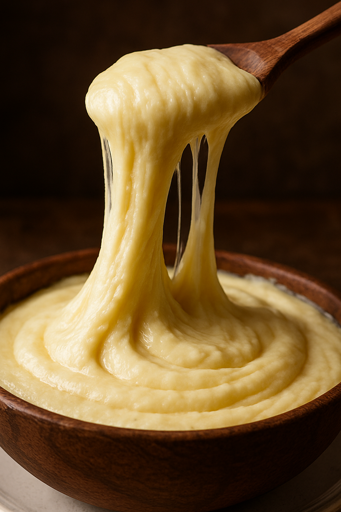

- 500g de batata cozida
- 200g de queijo meia cura
- 100g de muçarela
- 100ml de creme de leite
- 1 colher de manteiga
- Sal a gosto
- Cozinhe as batatas até que fiquem macias
- Amasse as batatas
- Misture o creme de leite e a manteiga
- Adicione os queijos aos poucos em fogo baixo, mexendo sempre até formar um purê elástico e homogêneo.
- Tempere a gosto
- Sirva em pratos quentes